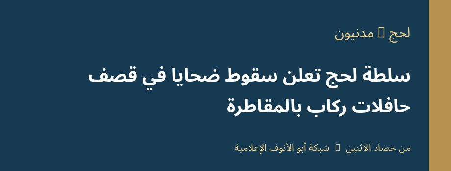
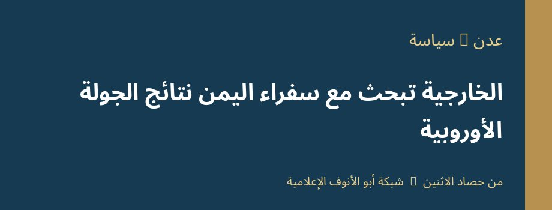

أخبار الأحد والاثنين بالصور
22 نوفمبر · تعز | تعليمتعليق الدراسة الحضورية يشمل المدارس الحكومية والأهلية 22 نوفمبر · تعز | صحةنقص اللقاحات يصعّب مواجهة الحصبة بين الأطفال
22 نوفمبر · تعز | صحةنقص اللقاحات يصعّب مواجهة الحصبة بين الأطفال 22 نوفمبر · تعز ومأرب | ميدانالجيش يعلن مواجهات في تعز وغارات في مأرب
22 نوفمبر · تعز ومأرب | ميدانالجيش يعلن مواجهات في تعز وغارات في مأرب 22 نوفمبر · لحج | نزوحأسر نزحت من المضاربة تبحث عن مأوى في عدن
22 نوفمبر · لحج | نزوحأسر نزحت من المضاربة تبحث عن مأوى في عدن 23 نوفمبر · ذمار | أمنالجيش يعلن سقوط صاروخ في ذمار كان متجهاً إلى عدن
23 نوفمبر · ذمار | أمنالجيش يعلن سقوط صاروخ في ذمار كان متجهاً إلى عدن 23 نوفمبر · اليمن | معيشةغلاء الغذاء والوقود يضغط على ميزانيات الأسر
23 نوفمبر · اليمن | معيشةغلاء الغذاء والوقود يضغط على ميزانيات الأسر 23 نوفمبر · عدن | صحةثلاثة مشاريع طبية في عدن تشمل جراحة الأطفال وعلاج الأورام
23 نوفمبر · عدن | صحةثلاثة مشاريع طبية في عدن تشمل جراحة الأطفال وعلاج الأورام
22 نوفمبر · تعز | صحةنقص اللقاحات يصعّب مواجهة الحصبة بين الأطفال22 نوفمبر · تعز ومأرب | ميدانالجيش يعلن مواجهات في تعز وغارات في مأرب22 نوفمبر · لحج | نزوحأسر نزحت من المضاربة تبحث عن مأوى في عدن
23 نوفمبر · لحج | مدنيونسلطة لحج تعلن سقوط ضحايا في قصف حافلات ركاب بالمقاطرة23 نوفمبر · ذمار | أمنالجيش يعلن سقوط صاروخ في ذمار كان متجهاً إلى عدن23 نوفمبر · اليمن | معيشةغلاء الغذاء والوقود يضغط على ميزانيات الأسر23 نوفمبر · عدن | صحةثلاثة مشاريع طبية في عدن تشمل جراحة الأطفال وعلاج الأورام
23 نوفمبر · عدن | سياسةالخارجية تبحث مع سفراء اليمن نتائج الجولة الأوروبية